Basement setup in Milwaulkee for upcoming Blinker project. We got almost complete isolation with bass in a stairwell and guitar in a bathroom:
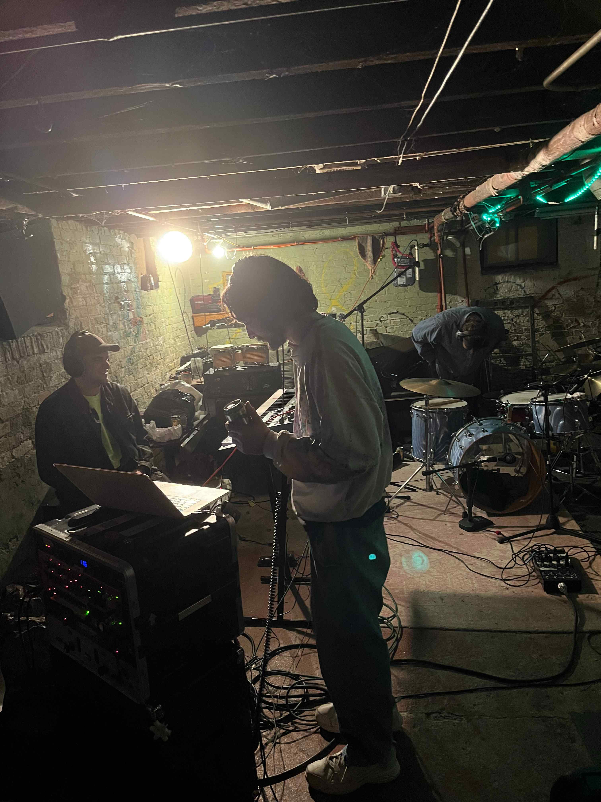 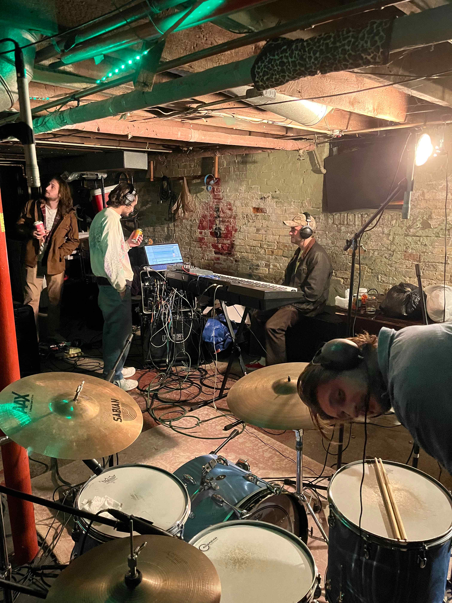Same basement setup for Blunt. Guitar and bass tracked live, amps isolated in side room and stairwell. Guitar had a room mic as well.
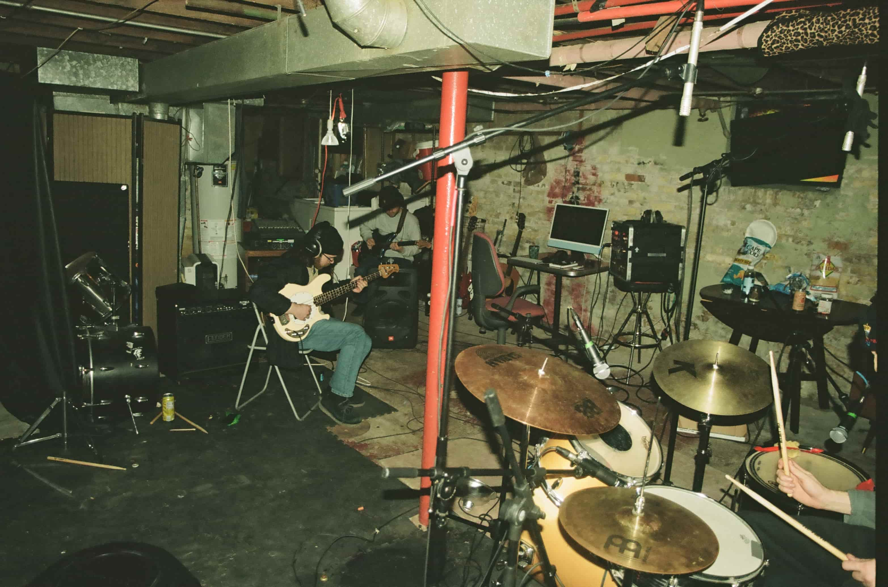 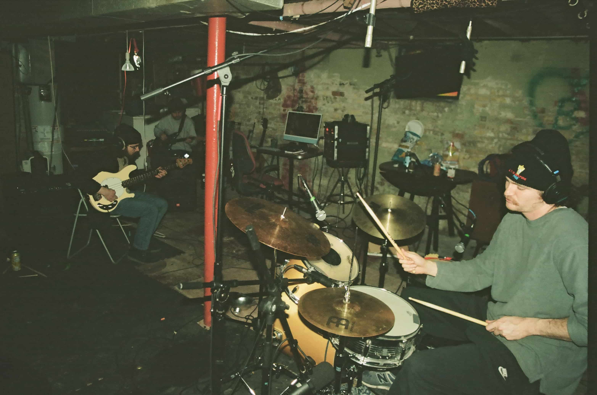Garage setup for Gorilla Gorilla Gorilla:
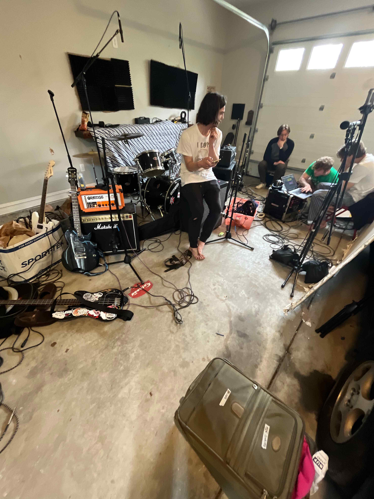 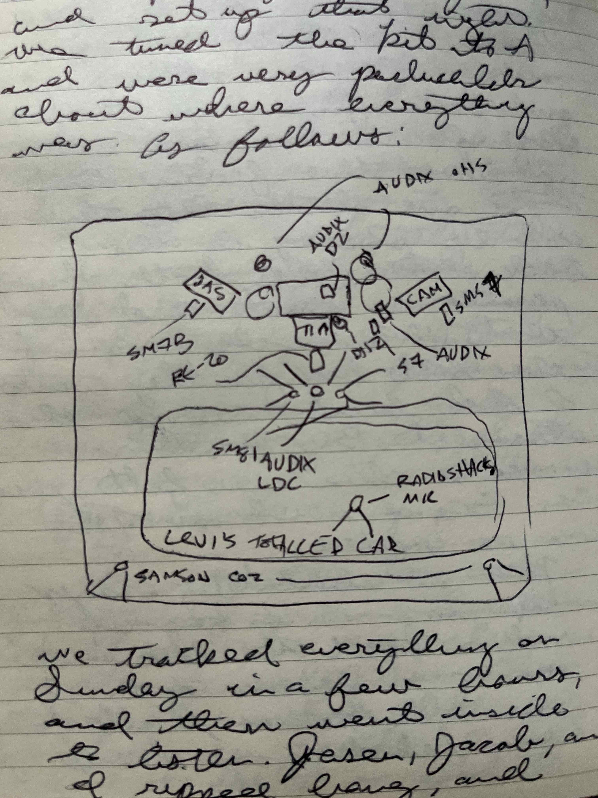...complete with the 'totalled car mic':
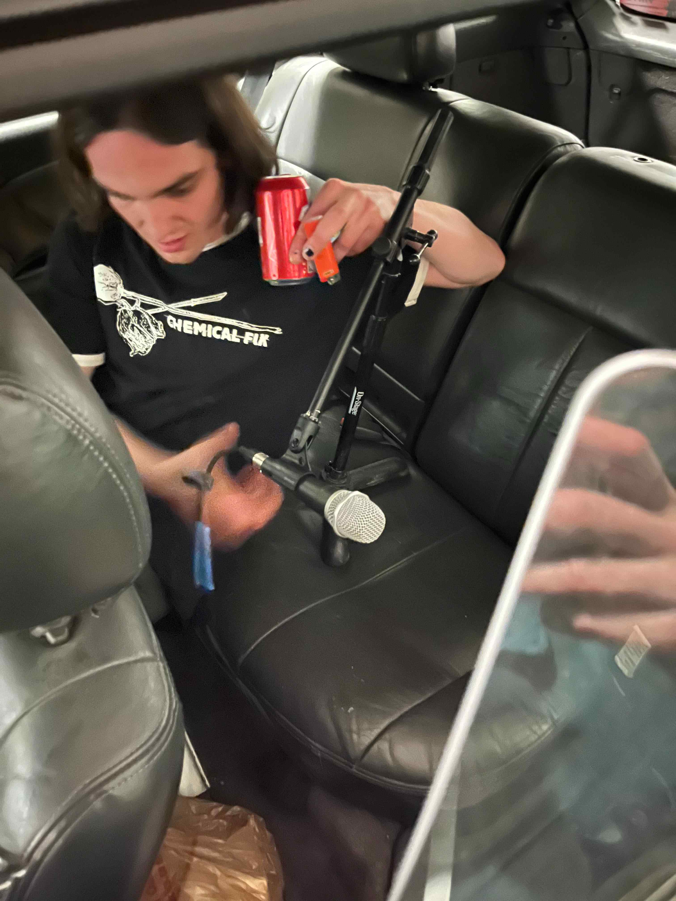Sick double-drum/improvised recording setup in Colorado:
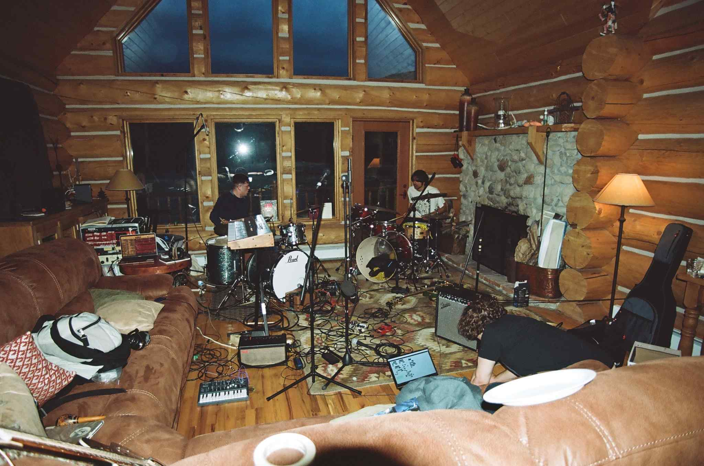 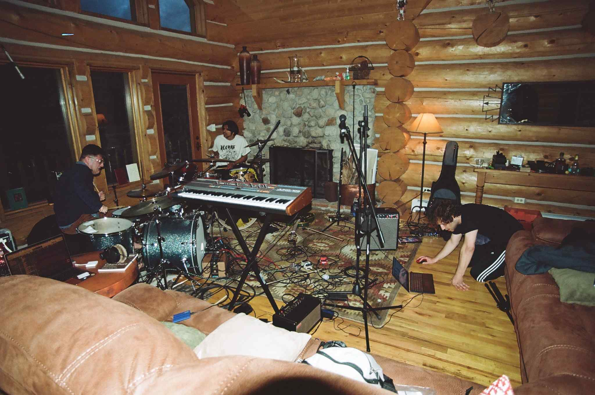Empty apartment guitar overdubs, with bathroom mic:
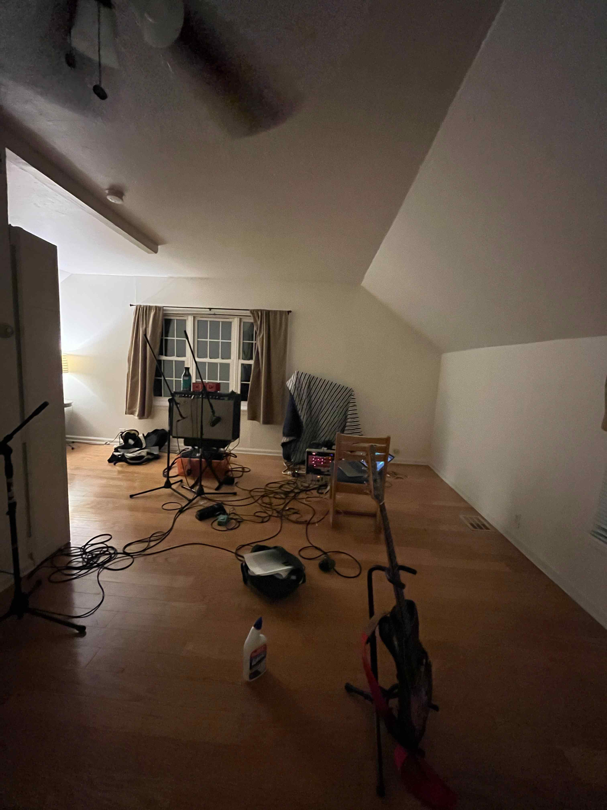Partial setup for Faced Out band tracking, before I knew how to pay attention to room configuration:
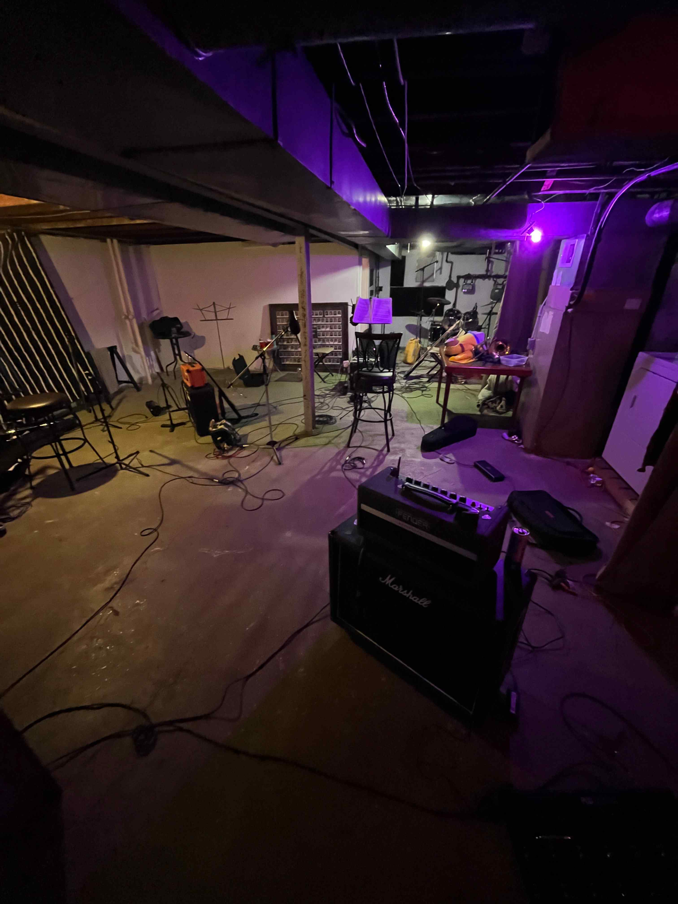Mobile rig ready to go, everything needed for a session save for amps:
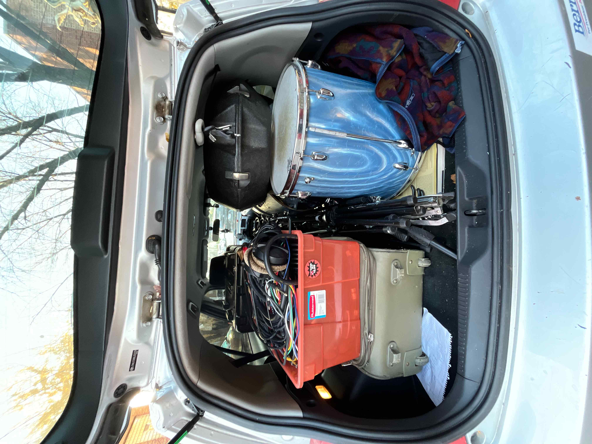